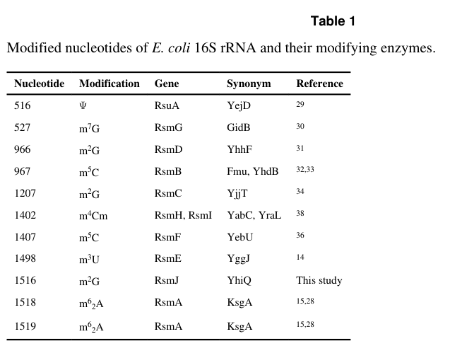

rsmJ (PP_1513, UniProt Q88MQ7) encodes the SAM-dependent 16S rRNA small subunit methyltransferase J (RsmJ; EC 2.1.1.242), the founder member of the RsmJ family. The enzyme (orthologous to E. coli YhiQ) catalyzes site-specific N2-methylation of guanine 1516 of 16S rRNA, producing m2G1516, using S-adenosyl-L-methionine as methyl donor and releasing S-adenosyl-L-homocysteine. It acts preferentially on assembled, late-stage 30S ribosomal particles rather than on free 16S rRNA, consistent with a role in cytoplasmic ribosome biogenesis. Function for the P. putida ortholog is inferred by strong family conservation from the experimentally characterized E. coli enzyme; the cold-sensitive growth defect seen in E. coli rsmJ mutants suggests m2G1516 contributes to ribosome robustness under stress.
| GO Term | Evidence | Action | Reason |
|---|---|---|---|
|
GO:0005737
cytoplasm
|
IEA
GO_REF:0000120 |
KEEP AS NON CORE |
Summary: The cytoplasm annotation is correct for RsmJ.
Reason: RsmJ is a soluble cytoplasmic rRNA methyltransferase whose substrate is the 30S ribosomal subunit; bacterial ribosome assembly and translation occur in the cytoplasm, so the location is accurate but non-core relative to its catalytic function.
Supporting Evidence:
file:PSEPK/rsmJ/rsmJ-uniprot.txt
SUBCELLULAR LOCATION: Cytoplasm
file:PSEPK/rsmJ/rsmJ-goa.tsv
GO:0005737 cytoplasm
file:PSEPK/rsmJ/rsmJ-deep-research-falcon.md
the substrate is the **30S ribosomal subunit** and bacterial ribosome assembly and translation occur in the **cytoplasm**
|
|
GO:0008990
rRNA (guanine-N2-)-methyltransferase activity
|
IEA
GO_REF:0000120 |
MODIFY |
Summary: This guanine-N2 rRNA methyltransferase term correctly captures the chemistry (N2-methylguanine on rRNA) but is less specific than the site-specific 16S G1516 activity term GO:0036308, which is the demonstrated function of RsmJ.
Reason: The annotation is chemically correct but too general. RsmJ has a single, experimentally established site specificity (m2G1516 of 16S rRNA), so the more specific child term GO:0036308 should be used as the molecular function. This is a generalization/over-broad-MF case (MODIFY with a more specific replacement), not an over-annotation of an unrelated activity.
Proposed replacements:
16S rRNA (guanine(1516)-N(2))-methyltransferase activity
Supporting Evidence:
file:PSEPK/rsmJ/rsmJ-uniprot.txt
guanosine in position 1516 of 16S
file:PSEPK/rsmJ/rsmJ-goa.tsv
GO:0008990 rRNA (guanine-N2-)-methyltransferase activity
file:PSEPK/rsmJ/rsmJ-deep-research-falcon.md
site-specific N2-methylation of guanine at position 1516 in 16S rRNA
|
|
GO:0031167
rRNA methylation
|
IEA
GO_REF:0000120 |
ACCEPT |
Summary: rRNA methylation is the correct biological process for RsmJ, which installs m2G1516 on 16S rRNA during ribosome biogenesis.
Reason: RsmJ specifically methylates guanosine 1516 of 16S rRNA, acting preferentially on assembled late-stage 30S particles; rRNA methylation is the accurate BP.
Supporting Evidence:
file:PSEPK/rsmJ/rsmJ-uniprot.txt
Specifically methylates the guanosine in position 1516
file:PSEPK/rsmJ/rsmJ-goa.tsv
GO:0031167 rRNA methylation
file:PSEPK/rsmJ/rsmJ-deep-research-falcon.md
acts preferentially on **assembled 30S particles** rather than free RNA
|
|
GO:0036308
16S rRNA (guanine(1516)-N(2))-methyltransferase activity
|
IEA
GO_REF:0000120 |
ACCEPT |
Summary: The 16S rRNA guanine1516 N2 methyltransferase term is the core molecular function for RsmJ and matches the experimentally characterized E. coli ortholog YhiQ.
Reason: UniProt assigns EC 2.1.1.242 and the Rhea reaction for N2-methylation of guanosine 1516 in 16S rRNA; the canonical E. coli study established YhiQ/RsmJ as the enzyme responsible for m2G1516, with deletion abolishing the modification and complementation restoring it. This is the precise demonstrated activity.
Supporting Evidence:
file:PSEPK/rsmJ/rsmJ-uniprot.txt
Specifically methylates the guanosine in position 1516
file:PSEPK/rsmJ/rsmJ-uniprot.txt
EC=2.1.1.242
file:PSEPK/rsmJ/rsmJ-goa.tsv
GO:0036308 16S rRNA (guanine(1516)-N(2))-methyltransferase activity
file:PSEPK/rsmJ/rsmJ-deep-research-falcon.md
deletion of **yhiQ/rsmJ** abolishes the methyl group at **G1516** in 16S rRNA, and complementation restores the modification
|
Q: Does RsmJ-dependent m2G1516 modification alter decoding accuracy or stress adaptation in KT2440?
Q: Is the cold-sensitive ribosome phenotype of E. coli rsmJ mutants conserved in P. putida KT2440, and does it affect industrial-relevant stress tolerance?
Experiment: Map 16S rRNA m2G1516 modification (e.g., by primer extension or nanopore direct RNA sequencing) and compare translation fidelity phenotypes in rsmJ knockout and complemented strains.
Type: rRNA modification and translational fidelity assay
Experiment: Test whether purified P. putida RsmJ methylates assembled 30S particles but not free 16S rRNA in vitro, confirming the late-stage 30S substrate preference seen for E. coli YhiQ.
Type: in vitro methyltransferase substrate-preference assay
The research report should be a detailed narrative explaining the function, biological processes, and localization of the gene product. Citations should be given for all claims.
You should prioritize authoritative reviews and primary scientific literature when conducting research. You can supplement
this with annotations you find in gene/protein databases, but these can be outdated or inaccurate.
We are specifically interested in the primary function of the gene - for enzymes, what reaction is catalyzed, and what is the substrate specificity? For transporters, what is the substrate? For structural proteins or adapters, what is the broader structural role? For signaling molecules, what is the role in the pathway.
We are interested in where in or outside the cell the gene product carries out its function.
We are also interested in the signaling or biochemical pathways in which the gene functions. We are less interested in broad pleiotropic effects, except where these elucidate the precise role.
Include evidence where possible. We are interested in both experimental evidence as well as inference from structure, evolution, or bioinformatic analysis. Precise studies should be prioritized over high-throughput, where available.
The UniProt entry provided (Q88MQ7; gene rsmJ; locus PP_1513) is annotated as a ribosomal RNA small subunit methyltransferase J belonging to the RsmJ family of SAM-dependent methyltransferases. The experimentally established founder function for bacterial RsmJ (also known as YhiQ in E. coli) is site-specific N2-methylation of guanine at position 1516 in 16S rRNA, producing m2G1516 (EC 2.1.1.242) (basturea2012yhiqisrsmj pages 1-3, basturea2012yhiqisrsmj pages 8-12). No tool-retrieved primary literature directly characterizing PP_1513/Q88MQ7 in P. putida KT2440 was found; organism-level functional claims below are therefore based on (i) the UniProt identity supplied in the prompt and (ii) high-confidence functional conservation from the canonical bacterial RsmJ literature (basturea2012yhiqisrsmj pages 1-3, basturea2012yhiqisrsmj pages 3-4).
RsmJ is a bacterial 16S rRNA base methyltransferase that catalyzes formation of N2-methylguanosine (m2G) at a defined nucleotide in the small-subunit rRNA: G1516 in E. coli numbering (basturea2012yhiqisrsmj pages 1-3, basturea2012yhiqisrsmj pages 8-12). This modification is part of the broader set of bacterial rRNA modifications (base methylations, ribose methylations, pseudouridines) that cluster in functionally important ribosomal regions (decoding center, intersubunit bridges, tRNA binding sites) and are introduced by site-specific enzymes (basturea2012yhiqisrsmj pages 1-3).
RsmJ is a SAM-dependent methyltransferase that transfers a methyl group from S-adenosyl-L-methionine (SAM) to the exocyclic N2 of guanine at 16S rRNA position 1516, producing m2G1516 and S-adenosyl-L-homocysteine (SAH) (basturea2012yhiqisrsmj pages 3-4, basturea2012yhiqisrsmj pages 8-12). In vitro assays explicitly used radiolabeled [3H]-SAM as methyl donor to detect methyl incorporation by purified enzyme (basturea2012yhiqisrsmj pages 3-4, basturea2012yhiqisrsmj pages 8-12).
Canonical evidence in E. coli demonstrates that deletion of yhiQ/rsmJ abolishes the methyl group at G1516 in 16S rRNA, and complementation restores the modification, establishing direct gene→site assignment (basturea2012yhiqisrsmj pages 1-3, basturea2012yhiqisrsmj pages 3-4). Site specificity was validated by primer extension, where reverse transcriptase stops at G1517 when G1516 is methylated (basturea2012yhiqisrsmj pages 8-12). These experimental readouts are also captured in the retrieved figure/table crops (basturea2012yhiqisrsmj media f9de6c21, basturea2012yhiqisrsmj media a932af51).
A central mechanistic insight is that RsmJ acts preferentially on assembled 30S particles rather than free RNA. Purified RsmJ (YhiQ) incorporated methyl groups into 30S ribosomal particles isolated from an rsmJ deletion strain, but no incorporation was detected on free 16S rRNA in that assay context, implying dependence on ribosomal-protein context and/or assembly-dependent rRNA conformation (basturea2012yhiqisrsmj pages 3-4). The authors interpret this as consistent with methylation occurring during a late intermediate/late step of 30S assembly (basturea2012yhiqisrsmj pages 3-4). A review of stress-related RNA modification biology similarly summarizes that almost all 16S rRNA modifying enzymes act on fully assembled subunits with proteins, consistent with late-stage biogenesis (baldridge2017insightsintothe pages 54-58).
Because the substrate is the 30S ribosomal subunit and bacterial ribosome assembly and translation occur in the cytoplasm, the functional localization for RsmJ is best described as cytoplasmic ribosome biogenesis/translation machinery, acting on small-subunit assembly intermediates or near-mature 30S particles (basturea2012yhiqisrsmj pages 3-4, baldridge2017insightsintothe pages 54-58). For P. putida KT2440 Q88MQ7 specifically, no direct localization experiments were retrieved; the localization inference rests on substrate context conserved across bacteria (basturea2012yhiqisrsmj pages 3-4).
In E. coli, loss of rsmJ causes a conditional cold-sensitive phenotype: little/no strong growth defect at 22–37°C, but reduced growth at 16°C, reported as ~88% of the isogenic wild-type growth rate under tested conditions (basturea2012yhiqisrsmj pages 4-6). This supports the idea that m2G1516 contributes to ribosome performance or assembly robustness under temperature stress (basturea2012yhiqisrsmj pages 3-4).
Despite the cold-sensitive growth phenotype, one study reports no detectable change in ribosome profile in mutant cells grown at 16°C (data not shown), suggesting that gross steady-state ribosomal subunit distributions were not dramatically perturbed under that assay (basturea2012yhiqisrsmj pages 4-6). This does not exclude subtle assembly kinetics/fidelity effects.
Basturea et al. directly tested whether loss of m2G1516 explains kasugamycin resistance (classically linked to loss of dimethyladenosines at A1518/A1519 by RsmA/KsgA). They found no difference in kasugamycin MIC between wild type and ΔrsmJ/ΔyhiQ (2 μg/mL in both), whereas ΔrsmA-containing strains were resistant up to 100 μg/mL (basturea2012yhiqisrsmj pages 4-6). Thus, m2G1516 is not the causal determinant of kasugamycin resistance in that genetic context.
Direct, RsmJ-focused mechanistic work in 2023–2024 was not retrieved for P. putida KT2440; however, multiple recent studies illuminate the broader, currently active research context in which RsmJ functions.
A 2023 study of E. coli adaptive antibiotic resistance reports increased global RNA methylation in antibiotic-resistant lines and explicitly identifies rsmJ as “16S rRNA m2G1516 methyltransferase.” The authors state that rsmJ is among RNA-modifying methyltransferase genes overexpressed in antibiotic-resistant cells (context suggests association with the gentamicin-resistant line), providing an association between rsmJ regulation and antibiotic-adaptive states (D’Aquila et al., 2023-06; https://doi.org/10.1128/spectrum.04583-22) (d’aquila2023epigeneticbasedregulationof pages 7-11). The excerpt does not provide fold-changes or demonstrate causality.
Tan et al. (2024-07; https://doi.org/10.1093/nar/gkae601) report that nanopore-based methods detected 18/25 known 23S rRNA modification sites and 6/11 known 16S rRNA modification sites (barrios2025directrnasequencing pages 24-26). Although this study excerpt does not single out G1516, it demonstrates a rapidly developing platform for large-scale rRNA modification profiling that could, in principle, be applied to organisms like P. putida.
A complementary 2024 nanopore DRS study (preprint) reports a systematic E. coli epitranscriptome analysis and detected 387 putative modifications outside rRNAs/tRNAs at 37°C after applying thresholds targeting <15% error rate (Barrios et al., 2024-07/11 preprint; https://doi.org/10.1101/2024.07.08.602490) (barrios2025directrnasequencing pages 24-26). Under heat stress (45°C), they observed increases in certain 16S rRNA methylation types (m5C, m6A, m6,6A) alongside decreases in tRNA anticodon-loop modification abundance, and they discuss how such remodeling could influence translation accuracy and stress physiology (barrios2025directrnasequencing pages 1-4).
A structural/evolutionary review of rRNA methylation emphasizes that rRNA modifications are concentrated in key functional regions and provides context for interpreting site-specific enzymes like RsmJ as part of a conserved ribosome-tuning layer (Sergiev et al., 2018-02; https://doi.org/10.1038/nchembio.2569) (basturea2012yhiqisrsmj pages 1-3).
A focused review/thesis on RNA modifications in stress argues that conservation of rRNA methyltransferases implies functional significance, and notes that methylations can stabilize RNA conformations and concentrate near RNA–RNA contact regions and the decoding center—consistent with roles that become apparent under stress (Baldridge, 2017-08; https://doi.org/10.26153/tsw/29512) (baldridge2017insightsintothe pages 54-58, baldridge2017insightsintothe pages 44-50). In that same source, RsmJ is listed as an enzyme acting on assembled 30S substrate and is annotated at the “m2G1516–m2G1835 intersubunit contact,” providing an interpretive placement of the modified nucleotide in ribosome architecture (baldridge2017insightsintothe pages 44-50).
While the canonical study indicates that loss of RsmJ does not confer kasugamycin resistance (basturea2012yhiqisrsmj pages 4-6), the broader literature links rRNA methylations to antibiotic phenotypes (baldridge2017insightsintothe pages 235-237). The 2023 adaptive resistance study’s observation that rsmJ is overexpressed in resistant lines suggests rsmJ may serve as a biomarker or component of adaptive states even when not directly causing classic target-site resistance (d’aquila2023epigeneticbasedregulationof pages 7-11).
The 2024 nanopore direct RNA sequencing workflows demonstrate real-world implementable assays that can detect many known rRNA modification sites in bacteria and quantify stress-dependent remodeling (barrios2025directrnasequencing pages 24-26, barrios2025directrnasequencing pages 1-4). Such methods could be deployed to compare rRNA modification profiles (including potentially m2G1516) across conditions (temperature stress, antibiotic exposure) or across strains, including industrially relevant chassis like P. putida.
The Basturea et al. (2012) figures/tables provide direct visual evidence that (i) m2G1516 is assigned to RsmJ/YhiQ, (ii) primer extension reports loss/restoration of methylation, and (iii) purified enzyme methylates appropriate ribosomal substrates (basturea2012yhiqisrsmj media 18ab5446, basturea2012yhiqisrsmj media f9de6c21, basturea2012yhiqisrsmj media a932af51, basturea2012yhiqisrsmj media 012ccfb0).
Most-supported primary function (conserved annotation): RsmJ (Q88MQ7; PP_1513) is a cytoplasmic SAM-dependent 16S rRNA guanine-N2 methyltransferase that installs m2G at the conserved G1516 site in the small-subunit rRNA, acting preferentially on assembled/late-stage 30S particles during ribosome biogenesis (basturea2012yhiqisrsmj pages 3-4, basturea2012yhiqisrsmj pages 8-12). Likely biological role: fine-tuning ribosome structure/function with phenotypes that are most evident under stress (cold) rather than in standard growth conditions (basturea2012yhiqisrsmj pages 4-6, basturea2012yhiqisrsmj pages 3-4). Antibiotic link: RsmJ loss alone does not explain kasugamycin resistance (basturea2012yhiqisrsmj pages 4-6), but rsmJ expression changes can associate with adaptive antibiotic resistance states (d’aquila2023epigeneticbasedregulationof pages 7-11).
| Entity | Functional annotation | Evidence/Notes | Key citations | Key source (date; URL) |
|---|---|---|---|---|
| RsmJ (rsmJ / yhiQ) | 16S rRNA guanine-N2 methyltransferase; installs m2G at nucleotide G1516 of bacterial 16S rRNA | Canonical experimental identification in E. coli established yhiQ as RsmJ; Table 1 assigns 1516 m2G to RsmJ/YhiQ | (basturea2012yhiqisrsmj pages 1-3, basturea2012yhiqisrsmj pages 8-12) | Basturea et al., 2012-01; https://doi.org/10.1016/j.jmb.2011.10.044 |
| Reaction | 16S rRNA guanine(1516) + SAM -> 16S rRNA m2G1516 + SAH | In vitro methylation assays used [3H]-SAM and purified His-YhiQ; activity is specific for the G1516 site | (basturea2012yhiqisrsmj pages 3-4, basturea2012yhiqisrsmj pages 8-12) | Basturea et al., 2012-01; https://doi.org/10.1016/j.jmb.2011.10.044 |
| Substrate specificity | Preferred substrate is the 30S ribosomal subunit containing immature/unmodified 16S rRNA; free 16S rRNA is a poor or inactive substrate | No methyl incorporation into free 16S rRNA in one assay context, implying dependence on ribosomal particle context and/or ribosomal proteins; modification likely occurs during late 30S assembly | (basturea2012yhiqisrsmj pages 3-4, basturea2012yhiqisrsmj pages 8-12) | Basturea et al., 2012-01; https://doi.org/10.1016/j.jmb.2011.10.044 |
| Cofactor | S-adenosyl-L-methionine (SAM) methyl donor | Structural assignment and biochemical assay conditions support SAM-dependent catalysis; family belongs to SAM-dependent methyltransferase superfamily | (basturea2012yhiqisrsmj pages 3-4, basturea2012yhiqisrsmj pages 8-12) | Basturea et al., 2012-01; https://doi.org/10.1016/j.jmb.2011.10.044 |
| Product/site | m2G1516 in 16S rRNA, located in the 3′ minor domain / helix 45-44 region of the small subunit | Site verified by primer-extension stop at G1517 when G1516 is methylated; region is functionally important and highly conserved | (basturea2012yhiqisrsmj pages 1-3, basturea2012yhiqisrsmj pages 8-12, basturea2012yhiqisrsmj media 18ab5446) | Basturea et al., 2012-01; https://doi.org/10.1016/j.jmb.2011.10.044 |
| Cellular context / localization | Acts in the cytoplasm on the small ribosomal subunit (30S) during ribosome biogenesis/translation machinery maturation | Evidence points to modification on assembled ribosomal particles rather than naked RNA; review literature places bacterial rRNA methylations in ribosome assembly and functional tuning | (basturea2012yhiqisrsmj pages 3-4, jayalath2021investigationofthe pages 23-31) | Basturea et al., 2012-01; https://doi.org/10.1016/j.jmb.2011.10.044; Sergiev et al., 2018-02; https://doi.org/10.1038/nchembio.2569 |
| Key experimental evidence | (1) ΔyhiQ loses G1516 methylation; (2) complementation restores it; (3) purified YhiQ methylates 30S particles in vitro; (4) primer extension detects the modification site | This combination provides strong gene-to-reaction assignment and site-specific validation | (basturea2012yhiqisrsmj pages 3-4, basturea2012yhiqisrsmj pages 1-3, basturea2012yhiqisrsmj pages 8-12, basturea2012yhiqisrsmj media 18ab5446) | Basturea et al., 2012-01; https://doi.org/10.1016/j.jmb.2011.10.044 |
| Phenotypes on loss of enzyme | Cold-sensitive growth defect at 16°C; little/no major growth defect at 22–37°C | Reported growth of yhiQ mutant at 16°C was ~88% of isogenic wild type; no major ribosome profile change detected in that study | (basturea2012yhiqisrsmj pages 3-4, basturea2012yhiqisrsmj pages 4-6) | Basturea et al., 2012-01; https://doi.org/10.1016/j.jmb.2011.10.044 |
| Antibiotic-related phenotype | Loss of RsmJ alone did not explain kasugamycin resistance associated with loss of RsmA | MIC of kasugamycin remained 2 μg/mL for WT and ΔyhiQ, whereas ΔrsmA-containing strains were resistant up to 100 μg/mL | (basturea2012yhiqisrsmj pages 4-6) | Basturea et al., 2012-01; https://doi.org/10.1016/j.jmb.2011.10.044 |
| Family/domain inference for target protein Q88MQ7 | Consistent with RsmJ family, DUF548/UPF0341/COG0500-like SAM-dependent methyltransferase architecture | Matches the supplied UniProt description for Pseudomonas putida KT2440 Q88MQ7 / PP_1513; direct organism-specific experimental paper was not retrieved, so annotation is inferred by strong family conservation | (basturea2012yhiqisrsmj pages 3-4, basturea2012yhiqisrsmj pages 1-3) | Basturea et al., 2012-01; https://doi.org/10.1016/j.jmb.2011.10.044 |
| Recent developments relevant to function | Modern bacterial epitranscriptome studies detect many known 16S/23S rRNA modifications and show stress-responsive remodeling of RNA modifications, reinforcing biological importance of rRNA methylation networks | 2024 nanopore/orthogonal studies detected 18/25 known 23S and 6/11 known 16S rRNA modification sites in one dataset; another 2024 study reported 387 putative non-rRNA/tRNA modifications and heat-stress-associated increases in some 16S rRNA marks, though not specifically assigning new RsmJ biology | (barrios2025directrnasequencing pages 24-26, barrios2025directrnasequencing pages 1-4, barrios2025directrnasequencing pages 31-34) | Tan et al., 2024-07; https://doi.org/10.1093/nar/gkae601; Barrios et al., 2024-11 preprint; https://doi.org/10.1101/2024.07.08.602490 |
Table: This table summarizes the experimentally established function of RsmJ/YhiQ and maps it onto the target UniProt entry Q88MQ7 from Pseudomonas putida KT2440. It highlights reaction chemistry, substrate specificity, cellular context, phenotypes, and the strength and limits of current organism-specific evidence.
References
(basturea2012yhiqisrsmj pages 1-3): Georgeta N. Basturea, Darryl R. Dague, Murray P. Deutscher, and Kenneth E. Rudd. Yhiq is rsmj, the methyltransferase responsible for methylation of g1516 in 16s rrna of e. coli. Journal of molecular biology, 415 1:16-21, Jan 2012. URL: https://doi.org/10.1016/j.jmb.2011.10.044, doi:10.1016/j.jmb.2011.10.044. This article has 41 citations and is from a domain leading peer-reviewed journal.
(basturea2012yhiqisrsmj pages 8-12): Georgeta N. Basturea, Darryl R. Dague, Murray P. Deutscher, and Kenneth E. Rudd. Yhiq is rsmj, the methyltransferase responsible for methylation of g1516 in 16s rrna of e. coli. Journal of molecular biology, 415 1:16-21, Jan 2012. URL: https://doi.org/10.1016/j.jmb.2011.10.044, doi:10.1016/j.jmb.2011.10.044. This article has 41 citations and is from a domain leading peer-reviewed journal.
(basturea2012yhiqisrsmj pages 3-4): Georgeta N. Basturea, Darryl R. Dague, Murray P. Deutscher, and Kenneth E. Rudd. Yhiq is rsmj, the methyltransferase responsible for methylation of g1516 in 16s rrna of e. coli. Journal of molecular biology, 415 1:16-21, Jan 2012. URL: https://doi.org/10.1016/j.jmb.2011.10.044, doi:10.1016/j.jmb.2011.10.044. This article has 41 citations and is from a domain leading peer-reviewed journal.
(basturea2012yhiqisrsmj media f9de6c21): Georgeta N. Basturea, Darryl R. Dague, Murray P. Deutscher, and Kenneth E. Rudd. Yhiq is rsmj, the methyltransferase responsible for methylation of g1516 in 16s rrna of e. coli. Journal of molecular biology, 415 1:16-21, Jan 2012. URL: https://doi.org/10.1016/j.jmb.2011.10.044, doi:10.1016/j.jmb.2011.10.044. This article has 41 citations and is from a domain leading peer-reviewed journal.
(basturea2012yhiqisrsmj media a932af51): Georgeta N. Basturea, Darryl R. Dague, Murray P. Deutscher, and Kenneth E. Rudd. Yhiq is rsmj, the methyltransferase responsible for methylation of g1516 in 16s rrna of e. coli. Journal of molecular biology, 415 1:16-21, Jan 2012. URL: https://doi.org/10.1016/j.jmb.2011.10.044, doi:10.1016/j.jmb.2011.10.044. This article has 41 citations and is from a domain leading peer-reviewed journal.
(baldridge2017insightsintothe pages 54-58): Kevin Charles Baldridge and 0000-0003-1829-7714. Insights into the functions of rna post-transcriptional modifications gained through studies in cellular stress. Text, Aug 2017. URL: https://doi.org/10.26153/tsw/29512, doi:10.26153/tsw/29512. This article has 0 citations and is from a peer-reviewed journal.
(basturea2012yhiqisrsmj pages 4-6): Georgeta N. Basturea, Darryl R. Dague, Murray P. Deutscher, and Kenneth E. Rudd. Yhiq is rsmj, the methyltransferase responsible for methylation of g1516 in 16s rrna of e. coli. Journal of molecular biology, 415 1:16-21, Jan 2012. URL: https://doi.org/10.1016/j.jmb.2011.10.044, doi:10.1016/j.jmb.2011.10.044. This article has 41 citations and is from a domain leading peer-reviewed journal.
(d’aquila2023epigeneticbasedregulationof pages 7-11): Patrizia D’Aquila, Francesco De Rango, Ersilia Paparazzo, Giuseppe Passarino, and Dina Bellizzi. Epigenetic-based regulation of transcriptome in escherichia coli adaptive antibiotic resistance. Microbiology Spectrum, Jun 2023. URL: https://doi.org/10.1128/spectrum.04583-22, doi:10.1128/spectrum.04583-22. This article has 22 citations and is from a domain leading peer-reviewed journal.
(barrios2025directrnasequencing pages 24-26): Sebastian Riquelme Barrios, Leonardo Vasquez Camus, Siobhan A. Cusack, Korinna Burdack, Dimitar Plamenov Petrov, G. N. Yeşiltaç-Tosun, Stefanie M. Kaiser, Pascal Giehr, and Kirsten Jung. Direct rna sequencing of the escherichia coli epitranscriptome uncovers alterations under heat stress. Nucleic Acids Research, Nov 2024. URL: https://doi.org/10.1101/2024.07.08.602490, doi:10.1101/2024.07.08.602490. This article has 1 citations and is from a highest quality peer-reviewed journal.
(barrios2025directrnasequencing pages 1-4): Sebastian Riquelme Barrios, Leonardo Vasquez Camus, Siobhan A. Cusack, Korinna Burdack, Dimitar Plamenov Petrov, G. N. Yeşiltaç-Tosun, Stefanie M. Kaiser, Pascal Giehr, and Kirsten Jung. Direct rna sequencing of the escherichia coli epitranscriptome uncovers alterations under heat stress. Nucleic Acids Research, Nov 2024. URL: https://doi.org/10.1101/2024.07.08.602490, doi:10.1101/2024.07.08.602490. This article has 1 citations and is from a highest quality peer-reviewed journal.
(baldridge2017insightsintothe pages 44-50): Kevin Charles Baldridge and 0000-0003-1829-7714. Insights into the functions of rna post-transcriptional modifications gained through studies in cellular stress. Text, Aug 2017. URL: https://doi.org/10.26153/tsw/29512, doi:10.26153/tsw/29512. This article has 0 citations and is from a peer-reviewed journal.
(baldridge2017insightsintothe pages 235-237): Kevin Charles Baldridge and 0000-0003-1829-7714. Insights into the functions of rna post-transcriptional modifications gained through studies in cellular stress. Text, Aug 2017. URL: https://doi.org/10.26153/tsw/29512, doi:10.26153/tsw/29512. This article has 0 citations and is from a peer-reviewed journal.
(basturea2012yhiqisrsmj media 18ab5446): Georgeta N. Basturea, Darryl R. Dague, Murray P. Deutscher, and Kenneth E. Rudd. Yhiq is rsmj, the methyltransferase responsible for methylation of g1516 in 16s rrna of e. coli. Journal of molecular biology, 415 1:16-21, Jan 2012. URL: https://doi.org/10.1016/j.jmb.2011.10.044, doi:10.1016/j.jmb.2011.10.044. This article has 41 citations and is from a domain leading peer-reviewed journal.
(basturea2012yhiqisrsmj media 012ccfb0): Georgeta N. Basturea, Darryl R. Dague, Murray P. Deutscher, and Kenneth E. Rudd. Yhiq is rsmj, the methyltransferase responsible for methylation of g1516 in 16s rrna of e. coli. Journal of molecular biology, 415 1:16-21, Jan 2012. URL: https://doi.org/10.1016/j.jmb.2011.10.044, doi:10.1016/j.jmb.2011.10.044. This article has 41 citations and is from a domain leading peer-reviewed journal.
(jayalath2021investigationofthe pages 23-31): K Jayalath. Investigation of the roles of pseudouridine synthases in ribosome biogenesis and epitranscriptomic gene regulation. Unknown journal, 2021.
(barrios2025directrnasequencing pages 31-34): Sebastian Riquelme Barrios, Leonardo Vasquez Camus, Siobhan A. Cusack, Korinna Burdack, Dimitar Plamenov Petrov, G. N. Yeşiltaç-Tosun, Stefanie M. Kaiser, Pascal Giehr, and Kirsten Jung. Direct rna sequencing of the escherichia coli epitranscriptome uncovers alterations under heat stress. Nucleic Acids Research, Nov 2024. URL: https://doi.org/10.1101/2024.07.08.602490, doi:10.1101/2024.07.08.602490. This article has 1 citations and is from a highest quality peer-reviewed journal.

id: Q88MQ7
gene_symbol: rsmJ
product_type: PROTEIN
status: DRAFT
taxon:
id: NCBITaxon:160488
label: Pseudomonas putida (strain ATCC 47054 / DSM 6125 / CFBP 8728 / NCIMB 11950 / KT2440)
description: rsmJ (PP_1513, UniProt Q88MQ7) encodes the SAM-dependent 16S rRNA small
subunit methyltransferase J (RsmJ; EC 2.1.1.242), the founder member of the RsmJ family.
The enzyme (orthologous to E. coli YhiQ) catalyzes site-specific N2-methylation of
guanine 1516 of 16S rRNA, producing m2G1516, using S-adenosyl-L-methionine as methyl
donor and releasing S-adenosyl-L-homocysteine. It acts preferentially on assembled,
late-stage 30S ribosomal particles rather than on free 16S rRNA, consistent with a
role in cytoplasmic ribosome biogenesis. Function for the P. putida ortholog is
inferred by strong family conservation from the experimentally characterized E. coli
enzyme; the cold-sensitive growth defect seen in E. coli rsmJ mutants suggests m2G1516
contributes to ribosome robustness under stress.
existing_annotations:
- term:
id: GO:0005737
label: cytoplasm
evidence_type: IEA
original_reference_id: GO_REF:0000120
review:
summary: The cytoplasm annotation is correct for RsmJ.
action: KEEP_AS_NON_CORE
reason: RsmJ is a soluble cytoplasmic rRNA methyltransferase whose substrate is the
30S ribosomal subunit; bacterial ribosome assembly and translation occur in the
cytoplasm, so the location is accurate but non-core relative to its catalytic function.
supported_by:
- reference_id: file:PSEPK/rsmJ/rsmJ-uniprot.txt
supporting_text: 'SUBCELLULAR LOCATION: Cytoplasm'
- reference_id: file:PSEPK/rsmJ/rsmJ-goa.tsv
supporting_text: "GO:0005737\tcytoplasm"
- reference_id: file:PSEPK/rsmJ/rsmJ-deep-research-falcon.md
supporting_text: the substrate is the **30S ribosomal subunit** and bacterial ribosome
assembly and translation occur in the **cytoplasm**
- term:
id: GO:0008990
label: rRNA (guanine-N2-)-methyltransferase activity
evidence_type: IEA
original_reference_id: GO_REF:0000120
review:
summary: This guanine-N2 rRNA methyltransferase term correctly captures the chemistry
(N2-methylguanine on rRNA) but is less specific than the site-specific 16S G1516
activity term GO:0036308, which is the demonstrated function of RsmJ.
action: MODIFY
reason: The annotation is chemically correct but too general. RsmJ has a single,
experimentally established site specificity (m2G1516 of 16S rRNA), so the more
specific child term GO:0036308 should be used as the molecular function. This is
a generalization/over-broad-MF case (MODIFY with a more specific replacement),
not an over-annotation of an unrelated activity.
proposed_replacement_terms:
- id: GO:0036308
label: 16S rRNA (guanine(1516)-N(2))-methyltransferase activity
supported_by:
- reference_id: file:PSEPK/rsmJ/rsmJ-uniprot.txt
supporting_text: guanosine in position 1516 of 16S
- reference_id: file:PSEPK/rsmJ/rsmJ-goa.tsv
supporting_text: "GO:0008990\trRNA (guanine-N2-)-methyltransferase activity"
- reference_id: file:PSEPK/rsmJ/rsmJ-deep-research-falcon.md
supporting_text: site-specific N2-methylation of guanine at position 1516 in 16S rRNA
- term:
id: GO:0031167
label: rRNA methylation
evidence_type: IEA
original_reference_id: GO_REF:0000120
review:
summary: rRNA methylation is the correct biological process for RsmJ, which installs
m2G1516 on 16S rRNA during ribosome biogenesis.
action: ACCEPT
reason: RsmJ specifically methylates guanosine 1516 of 16S rRNA, acting preferentially
on assembled late-stage 30S particles; rRNA methylation is the accurate BP.
supported_by:
- reference_id: file:PSEPK/rsmJ/rsmJ-uniprot.txt
supporting_text: Specifically methylates the guanosine in position 1516
- reference_id: file:PSEPK/rsmJ/rsmJ-goa.tsv
supporting_text: "GO:0031167\trRNA methylation"
- reference_id: file:PSEPK/rsmJ/rsmJ-deep-research-falcon.md
supporting_text: acts preferentially on **assembled 30S particles** rather than free RNA
- term:
id: GO:0036308
label: 16S rRNA (guanine(1516)-N(2))-methyltransferase activity
evidence_type: IEA
original_reference_id: GO_REF:0000120
review:
summary: The 16S rRNA guanine1516 N2 methyltransferase term is the core molecular
function for RsmJ and matches the experimentally characterized E. coli ortholog YhiQ.
action: ACCEPT
reason: UniProt assigns EC 2.1.1.242 and the Rhea reaction for N2-methylation of
guanosine 1516 in 16S rRNA; the canonical E. coli study established YhiQ/RsmJ as
the enzyme responsible for m2G1516, with deletion abolishing the modification and
complementation restoring it. This is the precise demonstrated activity.
supported_by:
- reference_id: file:PSEPK/rsmJ/rsmJ-uniprot.txt
supporting_text: Specifically methylates the guanosine in position 1516
- reference_id: file:PSEPK/rsmJ/rsmJ-uniprot.txt
supporting_text: EC=2.1.1.242
- reference_id: file:PSEPK/rsmJ/rsmJ-goa.tsv
supporting_text: "GO:0036308\t16S rRNA (guanine(1516)-N(2))-methyltransferase activity"
- reference_id: file:PSEPK/rsmJ/rsmJ-deep-research-falcon.md
supporting_text: deletion of **yhiQ/rsmJ** abolishes the methyl group at **G1516**
in 16S rRNA, and complementation restores the modification
references:
- id: GO_REF:0000120
title: Combined Automated Annotation using Multiple IEA Methods
findings: []
- id: file:PSEPK/rsmJ/rsmJ-uniprot.txt
title: UniProtKB reviewed entry for rsmJ
findings:
- supporting_text: EC=2.1.1.242
reference_section_type: OTHER
- supporting_text: Specifically methylates the guanosine in position 1516
reference_section_type: DATABASE_ENTRY
- id: file:PSEPK/rsmJ/rsmJ-goa.tsv
title: QuickGO GOA annotations for rsmJ
findings:
- supporting_text: "GO:0036308\t16S rRNA (guanine(1516)-N(2))-methyltransferase activity"
reference_section_type: OTHER
- id: file:interpro/panther/PTHR36112/PTHR36112-metadata.yaml
title: PANTHER family metadata for rsmJ
findings:
- supporting_text: PANTHER; PTHR36112; RIBOSOMAL RNA SMALL SUBUNIT METHYLTRANSFERASE J
reference_section_type: OTHER
- id: file:PSEPK/rsmJ/rsmJ-deep-research-falcon.md
title: Falcon deep research report for rsmJ (Q88MQ7, PP_1513)
findings:
- supporting_text: site-specific N2-methylation of guanine at position 1516 in 16S rRNA
reference_section_type: OTHER
- supporting_text: transfers a methyl group from **S-adenosyl-L-methionine (SAM)** to
the **exocyclic N2 of guanine**
reference_section_type: OTHER
- supporting_text: deletion of **yhiQ/rsmJ** abolishes the methyl group at **G1516** in
16S rRNA, and complementation restores the modification
reference_section_type: OTHER
- supporting_text: acts preferentially on **assembled 30S particles** rather than free RNA
reference_section_type: OTHER
- supporting_text: methylation occurring during a **late intermediate/late step of 30S
assembly**
reference_section_type: OTHER
- supporting_text: the substrate is the **30S ribosomal subunit** and bacterial ribosome
assembly and translation occur in the **cytoplasm**
reference_section_type: OTHER
- supporting_text: loss of rsmJ causes a **conditional cold-sensitive phenotype**
reference_section_type: OTHER
- supporting_text: loss of RsmJ does not confer kasugamycin resistance
reference_section_type: OTHER
core_functions:
- description: SAM-dependent 16S rRNA guanine-1516 N2-methyltransferase that installs
m2G1516 on assembled late-stage 30S ribosomal particles during ribosome biogenesis.
molecular_function:
id: GO:0036308
label: 16S rRNA (guanine(1516)-N(2))-methyltransferase activity
directly_involved_in:
- id: GO:0031167
label: rRNA methylation
supported_by:
- reference_id: file:PSEPK/rsmJ/rsmJ-uniprot.txt
supporting_text: Specifically methylates the guanosine in position 1516
- reference_id: file:PSEPK/rsmJ/rsmJ-uniprot.txt
supporting_text: EC=2.1.1.242
- reference_id: file:PSEPK/rsmJ/rsmJ-deep-research-falcon.md
supporting_text: site-specific N2-methylation of guanine at position 1516 in 16S rRNA
- reference_id: file:PSEPK/rsmJ/rsmJ-deep-research-falcon.md
supporting_text: acts preferentially on **assembled 30S particles** rather than free RNA
proposed_new_terms: []
suggested_questions:
- question: Does RsmJ-dependent m2G1516 modification alter decoding accuracy or stress
adaptation in KT2440?
- question: Is the cold-sensitive ribosome phenotype of E. coli rsmJ mutants conserved
in P. putida KT2440, and does it affect industrial-relevant stress tolerance?
suggested_experiments:
- description: Map 16S rRNA m2G1516 modification (e.g., by primer extension or nanopore
direct RNA sequencing) and compare translation fidelity phenotypes in rsmJ knockout
and complemented strains.
experiment_type: rRNA modification and translational fidelity assay
- description: Test whether purified P. putida RsmJ methylates assembled 30S particles
but not free 16S rRNA in vitro, confirming the late-stage 30S substrate preference
seen for E. coli YhiQ.
experiment_type: in vitro methyltransferase substrate-preference assay
{kind=link}